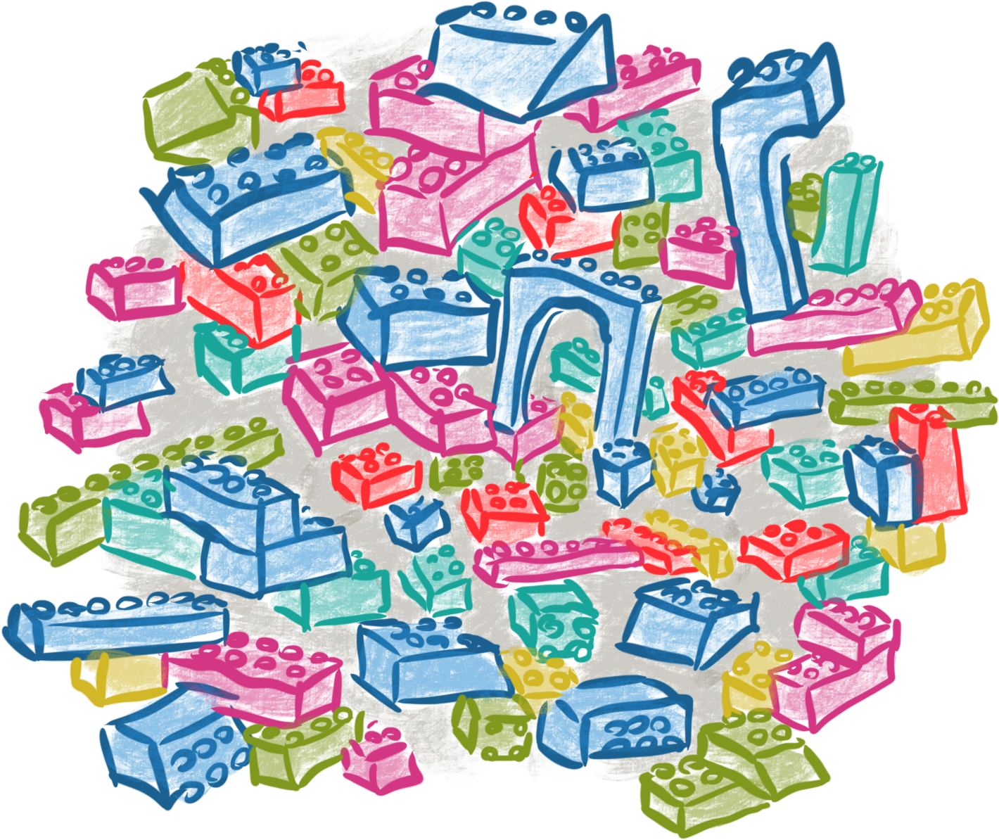
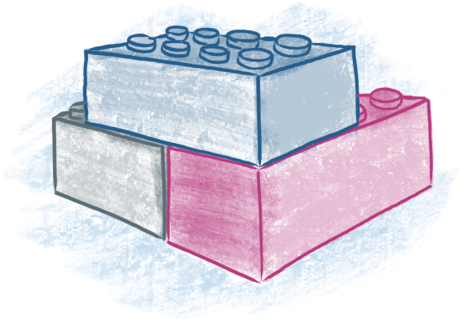

Software Entropy
Accumulation of Technical Debt
Big Ball of Mud
React Component Spaghetti
Divide and Conquer
Best Practices
Separate presentational
and container components
Organize presentational components
in a separate style guide
Separate application server and API server
Separation of Concerns

Thank you!
|
Ninja Maaß
Frontend Developer |
Daniel Schäfer Frontend Developer |
Eike Schulte-Kersmecke Backend Developer |
|
Anja Kunkel Backend Developer |
Torsten Walter Frontend Developer |
Juho Vepsäläinen Dev Consultant |
|
Mike Krüger Quality Assurance |
Hajo Skwirblies Site Operations |
Florian Stefan Architect |
|
Christoph Springer Team Lead |
Julia Thiele Product Owner |
Jakob Gehring Product Owner |
View this presentation online: bit.ly/break-react
Patrick Hund | Lead Frontend Developer | @wiekatz
Copyright © 2018 mobile.de GmbH